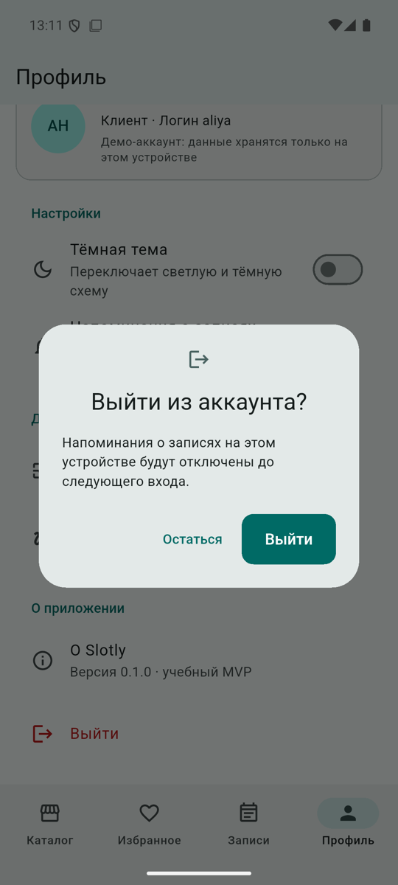

Вход и роли
Как устроены демо-вход, сессия и две оболочки приложения — клиента и владельца организации.
Это прототип, а не система безопасности. Аккаунты, пароли и проверка входа находятся на устройстве пользователя. Любой, у кого есть доступ к телефону или APK, может обойти локальные проверки. Соль и SHA-256 нужны только для того, чтобы пароли не лежали открытым текстом в файле базы. Production-вход должен проверяться сервером (см. ниже).
Сценарий
- Welcome-экран: логотип, слоган, выбор категории (требования ЛР №1 сохранены). Кнопка «Продолжить».
- Экран входа: логин, пароль с кнопкой «Показать пароль», карточка публичных демо-аккаунтов — касание подставляет логин и пароль.
- После входа корень приложения заменяет весь стек навигации оболочкой роли: клиент — «Каталог · Избранное · Записи · Профиль», владелец — «Обзор · Записи · Услуги · Отзывы · Организация».
- Выход — из профиля, с подтверждением. Стек снова заменяется: системная кнопка «Назад» не возвращает в закрытую сессию.
- При следующем запуске сессия восстанавливается: пользователь сразу попадает в свою оболочку.



Демо-аккаунты
Публичные тестовые данные: они специально опубликованы и ничего не защищают. Не используйте эти пароли для реальных аккаунтов.
| Роль | Организация | Логин | Пароль | Что проверять |
|---|---|---|---|---|
| Клиент | — | aliya | aliya-demo | История визитов, отзывы, избранное, перенос записи |
| Клиент | — | damir | damir-demo | Будущие записи, напоминания, «Я на месте» |
| Владелец | Барбершоп «Северный» | north | north-demo | Аналитика, услуги и цены, фото, ответы на отзывы |
| Владелец | Стоматология «Белая линия» | whiteline | whiteline-demo | Изоляция данных: видит только свою клинику |
| Клиент | — | zhanna | zhanna-demo | Дополнительная история записей |
| Клиент | — | ilya | ilya-demo | Дополнительная история записей |
Устройство
| Класс | Файл | Ответственность |
|---|---|---|
AppUser, UserRole | lib/features/auth/domain/app_user.dart | Пользователь с ролью; у владельца есть organizationId |
PasswordHasher | lib/features/auth/data/password_hasher.dart | SHA-256 с солью, сравнение за постоянное время |
AuthRepository, LocalAuthRepository | lib/features/auth/data/auth_repository.dart | Вход, восстановление и завершение сессии; одна ошибка на неверный логин или пароль |
SessionController | lib/features/auth/presentation/session_controller.dart | Текущий пользователь; источник currentUser для всех репозиториев |
SlotlyApp | lib/app/app.dart | Выбор корня по сессии; новый Navigator на каждый вход и выход |
ClientShell, OwnerShell | lib/app/client_shell.dart, lib/app/owner_shell.dart | Оболочки ролей; контроллеры сессии создаются здесь и освобождаются при выходе |
Почему права проверяются не в UI
Оболочка владельца просто не содержит клиентских экранов, а клиентская — владельческих. Но это только первый рубеж. Каждый репозиторий получает функцию currentUser и перед операцией вызывает AccessPolicy.require. Поэтому прямой вызов, например analytics.fetch(orgWhiteLine, …) от владельца «Северного», заканчивается AccessDeniedException — это проверяют и unit-тесты, и интеграционный сценарий №6. Матрица — на странице «Матрица прав».
Production-версия (фаза B)
- Проверка логина и пароля только на сервере (Django/DRF); хеширование Argon2id (или bcrypt/scrypt) с параметрами под серверное железо.
- Короткоживущий access token (5–15 минут) в памяти приложения; refresh token — в Android Keystore через secure storage.
- Ротация refresh token при каждом обновлении и отзыв сессий (выход на всех устройствах, блокировка пользователя).
- Каждый запрос проверяется сервером: DRF permissions + фильтрация queryset по организации; клиентские проверки остаются только для удобства интерфейса.
- Rate limiting и временная блокировка после серии неудачных попыток входа.
- Журнал аудита входов и действий владельцев.
Переход затрагивает только AuthRepository и SessionController: экраны и остальные репозитории уже получают пользователя через currentUser.